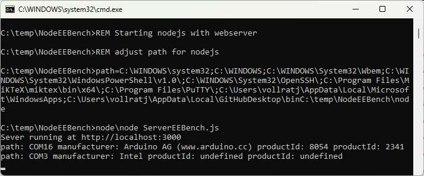
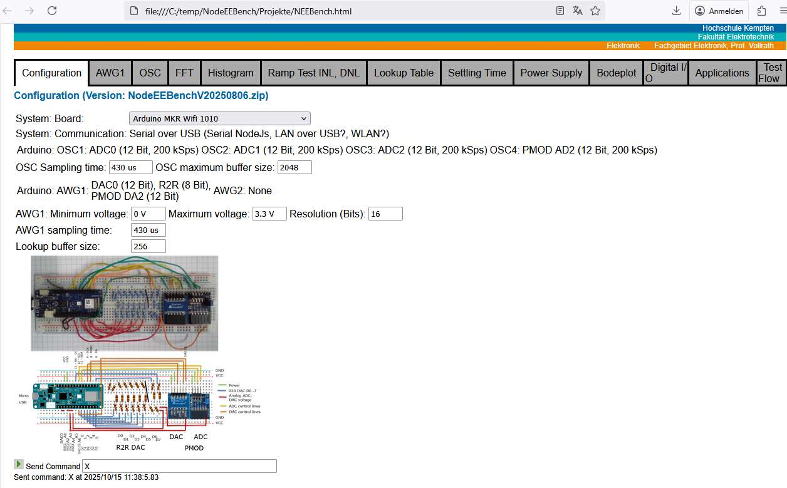

| AREF | 5V0 | 5V | ||
| DAC0 | AWG | VIN | ||
| A1 | C1 | 3V3 | VCC | |
| A2 | C2 | GND | ||
| A3 | C3 | RST | ||
| A4 | C4 | 14 | TX | |
| A5 | 13 | RX | ||
| A6 | CS | SC | 12 | SCL |
| 0 | DIO0 | SD | 11 | SDA |
| 1 | DIO1 | 10 | MISO | |
| 2 | DIO2 | SC | 9 | SCK |
| 3 | DIO3 | MI | 8 | MOSI |
| 4 | DIO4 | D7 | 7 | |
| 5 | DIO5 | D6 | 6 |
| Function | Arduino MKR 1010 WiFi |
| Oscilloscope | 4 channel 2.3 kSps 0..3.3 V |
| AWG | 1 channel 2.3 kSps 0..3.3 V |
| Function | BASYS 3 FPGA |
| Oscilloscope | 4 channel 128 kSps 0..1 V |
| AWG | 1 channel R2R 100 MSps 0..3.3 V |